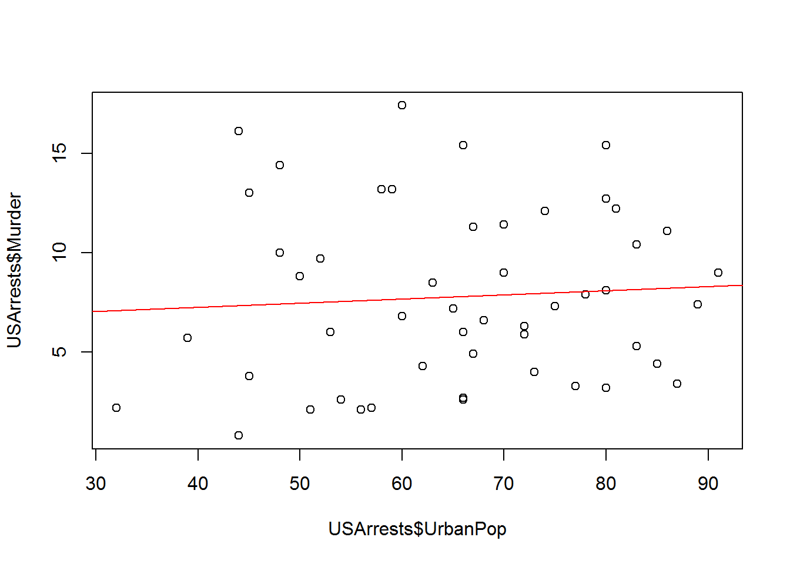

This lecture introduces you to basic operations when you first start using R such as navigation, the object-oriented framework, loading a package, and creating some data vectors.
Let’s ignore the underlying data structure right now and look at some ways that we might interact with data.
We will use the USArrests dataset available in the core files.
To access the data we need to load it into working memory. Anything that is active in R will be listed in the environment, which you can check using the ls() command. We will load the dataset using the data() command.
ls() # nothing currently available## [1] "x"data( "USArrests" )
ls() # data is now avaible for use## [1] "USArrests" "x"Now that we have loaded a dataset, we can start to access the variables and analyze relationships. Let’s get to know our dataset.
names( USArrests ) # what variables do you have?## [1] "Murder" "Assault" "UrbanPop" "Rape"row.names( USArrests ) # what are the obsevations (rows) in our data## [1] "Alabama" "Alaska" "Arizona" "Arkansas"
## [5] "California" "Colorado" "Connecticut" "Delaware"
## [9] "Florida" "Georgia" "Hawaii" "Idaho"
## [13] "Illinois" "Indiana" "Iowa" "Kansas"
## [17] "Kentucky" "Louisiana" "Maine" "Maryland"
## [21] "Massachusetts" "Michigan" "Minnesota" "Mississippi"
## [25] "Missouri" "Montana" "Nebraska" "Nevada"
## [29] "New Hampshire" "New Jersey" "New Mexico" "New York"
## [33] "North Carolina" "North Dakota" "Ohio" "Oklahoma"
## [37] "Oregon" "Pennsylvania" "Rhode Island" "South Carolina"
## [41] "South Dakota" "Tennessee" "Texas" "Utah"
## [45] "Vermont" "Virginia" "Washington" "West Virginia"
## [49] "Wisconsin" "Wyoming"nrow( USArrests ) # how many observations are there?## [1] 50dim( USArrests ) # a quick way to see rows and columns - the dimensions of the dataset## [1] 50 4summary( USArrests ) # summary statistics of variables## Murder Assault UrbanPop Rape
## Min. : 0.800 Min. : 45.0 Min. :32.00 Min. : 7.30
## 1st Qu.: 4.075 1st Qu.:109.0 1st Qu.:54.50 1st Qu.:15.07
## Median : 7.250 Median :159.0 Median :66.00 Median :20.10
## Mean : 7.788 Mean :170.8 Mean :65.54 Mean :21.23
## 3rd Qu.:11.250 3rd Qu.:249.0 3rd Qu.:77.75 3rd Qu.:26.18
## Max. :17.400 Max. :337.0 Max. :91.00 Max. :46.00We can see that the dataset consists of four variables: Murder, Assault, UrbanPop, and Rape. We also see that our unit of analysis is the state. But where does the data come from, and how are these variables measured?
To see the documentation for a specific dataset you will need to use the help() function:
help( USArrests )We get valuable information about the source and metrics:
Description This data set contains statistics, in arrests per 100,000 residents for assault, murder, and rape in each of the 50 US states in 1973. Also given is the percent of the population living in urban areas.
Format A data frame with 50 observations on 4 variables.
[,1] Murder numeric Murder arrests (per 100,000) [,2] Assault numeric Assault arrests (per 100,000) [,3] UrbanPop numeric Percent urban population [,4] Rape numeric Rape arrests (per 100,000)
To access a specific variable inside of a dataset, you will use the $ operator between the dataset name and the variable name:
summary( USArrests$Murder )## Min. 1st Qu. Median Mean 3rd Qu. Max.
## 0.800 4.075 7.250 7.788 11.250 17.400summary( USArrests$Assault )## Min. 1st Qu. Median Mean 3rd Qu. Max.
## 45.0 109.0 159.0 170.8 249.0 337.0# Is there a relationship between urban density and crime?
plot( USArrests$UrbanPop, USArrests$Murder )
abline( lm( USArrests$Murder ~ USArrests$UrbanPop ), col="red" )
Let’s take a look at some of the data available in the Lahman package.
# data( package = "Lahman" )We see that we have lots of datasets to choose from here. I will use the Master dataset, which is a list of all of the Major League Baseball players over the past century, and their personal information.
library( Lahman )
data( Master )
names( Master )## [1] "playerID" "birthYear" "birthMonth" "birthDay"
## [5] "birthCountry" "birthState" "birthCity" "deathYear"
## [9] "deathMonth" "deathDay" "deathCountry" "deathState"
## [13] "deathCity" "nameFirst" "nameLast" "nameGiven"
## [17] "weight" "height" "bats" "throws"
## [21] "debut" "finalGame" "retroID" "bbrefID"
## [25] "deathDate" "birthDate"# Let's get information about the variable in the dataset
# help( Master )
nrow( Master ) # 18,354 players included## [1] 18846library( stargazer )
stargazer( Master, type="html" )| Statistic | N | Mean | St. Dev. | Min | Max |
| birthYear | 18,702 | 1,930.668 | 41.225 | 1,820 | 1,995 |
| birthMonth | 18,532 | 6.627 | 3.467 | 1 | 12 |
| birthDay | 18,383 | 15.608 | 8.748 | 1 | 31 |
| deathYear | 9,339 | 1,963.859 | 31.511 | 1,872 | 2,016 |
| deathMonth | 9,338 | 6.484 | 3.529 | 1 | 12 |
| deathDay | 9,337 | 15.569 | 8.778 | 1 | 31 |
| weight | 17,975 | 185.994 | 21.242 | 65 | 320 |
| height | 18,041 | 72.256 | 2.599 | 43 | 83 |
Perhaps I am curious about some of the data. I see that we have information on the birth month of professional baseball players. If you have read Malcolm Gladwell’s book Outliers you know there is an interesting cumulative advantage phenomenon that can occur with atheletes as they are young. If you are born near the end of the cutoff, you are on average six months older than other players in your league, and therefore slightly larger physically and more coordinated on average. Six months does not sound like much, but the slight size and coordination advantage means more playing time, which also improves skill. Over time, this small difference accumulates so that those lucky enough to be born near the cutoff become the best players.
Gladwell looked at studies of hockey. Do we see this in baseball?
table( Master$birthMonth )##
## 1 2 3 4 5 6 7 8 9 10 11 12
## 1612 1413 1512 1427 1424 1350 1480 1808 1636 1740 1596 1534tab <- prop.table( table( Master$birthMonth ) )
names(tab) <- c("Jan","Feb","Mar","Apr","May","Jun","Jul","Aug","Sep","Oct","Nov","Dec")
dotchart( tab, pch=19, xlab = "Percent of Players", ylab = "Birth Month" )Copyright © 201 Yourmom, Inc. All rights reserved.